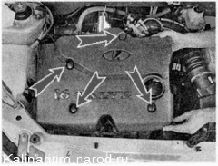
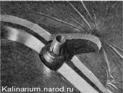

Декоративная накладка двигателя снятие и установкаДекоративную накладку удерживают четыре резиновые муфты, надетые на шпильки крышки впускного модуля. Снятие 1. Подготавливаем автомобиль к выполнению работы 2. Приподняв, снимаем декоративную накладку двигателя вместе с резиновыми муфтами. 
Если одна или несколько муфт остались на шпильках, снимите их и вставьте в соответствующие отверстия накладки. Установка Устанавливаем накладку на двигатель и, убедившись, что все муфты ее крепления надеты на шпильки впускного модуля, надавливаем на накладку сверху до фиксации. |